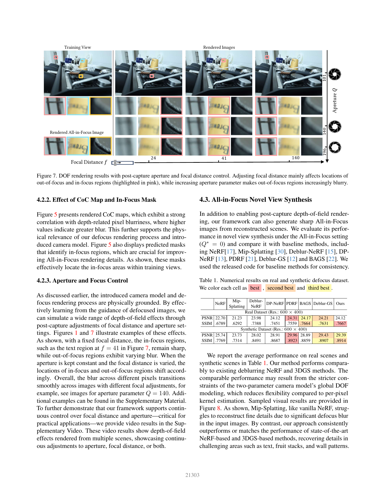
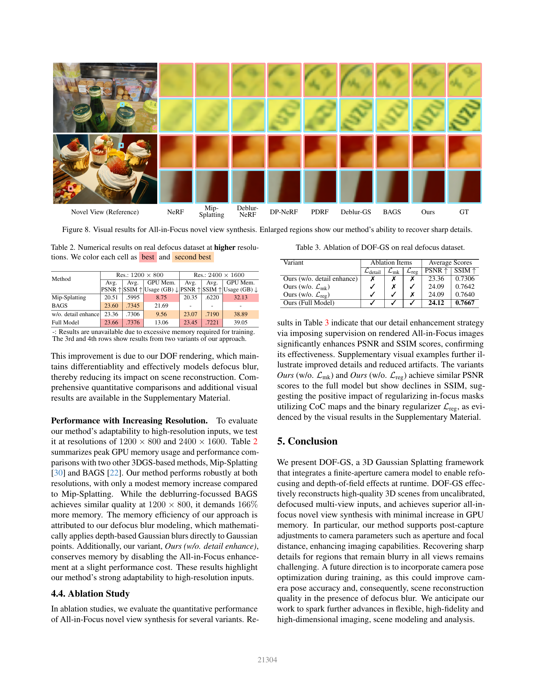
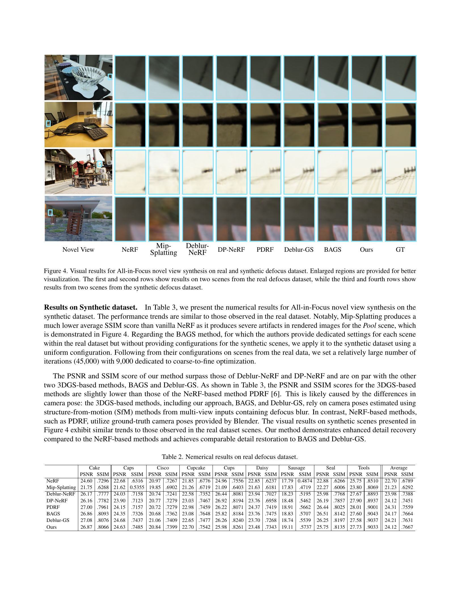

一句话主张
通过薄透镜散焦圆约束高斯模糊，再用清晰区域监督恢复细节，DOF-GS能从多视失焦照片重建可在拍摄后调焦和调光圈的场景。它仍依赖SfM（从多张照片估计相机和稀疏三维点）相机和逐场优化，清晰图质不等于真实几何准确。
先懂本页指标
| 指标 | 看什么 | 方向 |
|---|---|---|
| PSNR | 像素重建质量；越高表示像素误差越小 | ↑ |
| SSIM | 重建图与原图的结构相似性 | ↑ |
| F1／F-score | 同时考虑匹配是否正确和是否完整 | ↑ |
身份与证据版本
CVPR2025正式主会，三位作者为Yujie Wang、Praneeth Chakravarthula、Baoquan Chen；页码21297–21306，DOI见页首链接。Crossref正式出版日为2025-06-10；不是元数据登记日。同年Shen等人的DoF-Gaussian属于另一篇。
本次完整阅读CVF接收稿主文10页及官方补充PDF10页，保留PDF/ZIP原件、可检索文本和独立分析。未与IEEE最终版字节逐一比较。官方补充视频仅检查元数据与代表片段，抽查范围在原始审计中显标。
它解决什么
有限光圈使离开对焦平面的点变成模糊圆。针孔3DGS会把这种视图间不一致吸收到场景里，影响细节和新视角。DOF-GS显式解释光学失焦，让场景外观与拍摄时的景深分开优化。
输入是静态场景、适度失焦的多视RGB。相机位姿与初始稀疏点云先由SfM估计；文中“未标定”指失焦参数未知，不能解释成无需内外参（主文Fig3、补充Algorithm1）。运动模糊和动态物体不在本证据范围。
方法怎样连起来
- 物理参数：每视图学习对焦距离f与光圈组合参数Q。薄透镜近似下，散焦圆半径随点与焦平面的逆深度差增加；Q并不分别标定真实镜头焦距和光圈直径（主文§3.1）。
- 可微失焦渲染：给投影高斯卷积深度相关高斯核，再合成颜色。每个图元用中心深度近似；这不等于复杂镜头像差与遮挡的精确光线追踪（§3.2）。
- 恢复清晰细节：把光圈置零渲染全清晰图。四层清晰区域定位网络ILN利用RGB、深度、散焦圆图和位置编码，预测哪些输入像素适合监督清晰图；无需人工掩码（§3.3）。
补充给出实际训练阶段：先只拟合失焦图，再关闭该直接损失，使用清晰/失焦混合图及掩码正则。它还会增添均匀点，并禁用散焦协方差到深度的一条梯度路径。主文总目标不能代替这套阶段配方（补充§§1–2、Algorithm1）。
全清晰新视角结果
主文Table1、补充Tables2–3；输入与输出分辨率均为600×400，以下都是同篇自报平均。真实数据九场，合成数据五场。
| 数据/方法 | PSNR ↑ | SSIM ↑ |
|---|---|---|
| 真实 / DOF-GS | 24.12 | 0.7667 |
| 真实 / PDRF | 24.31 | 0.7559 |
| 真实 / Deblur-GS | 24.21 | 0.7631 |
| 真实 / BAGS | 24.17 | 0.7664 |
| 合成 / DOF-GS | 29.39 | 0.8914 |
| 合成 / PDRF | 29.96 | 0.8923 |
| 合成 / Deblur-GS | 29.43 | 0.8907 |
真实集SSIM最高，但PSNR没有领先。合成集的NeRF系采用Blender真值位姿，3DGS系采用失焦图估计的COLMAP位姿；不能把这两类差值当同相机权限排名（补充§3.4）。
更高分辨率的成本
主文Table2报告训练峰值显存，不能当运行时模型体积或完整管线开销。
| 分辨率/方法 | PSNR ↑ | SSIM ↑ | 峰值显存GB ↓ |
|---|---|---|---|
| 1200×800 / DOF-GS | 23.66 | 0.7376 | 13.06 |
| 1200×800 / BAGS | 23.60 | 0.7345 | 21.69 |
| 1200×800 / Mip-Splatting | 20.51 | 0.5995 | 8.75 |
| 2400×1600 / DOF-GS | 23.45 | 0.7221 | 39.05 |
| 2400×1600 / Mip-Splatting | 20.35 | 0.6220 | 32.13 |
完整模型比BAGS省，但比Mip-Splatting更贵。2400×1600的BAGS因训练内存需求而未报告，不能编造对应分数。原文“166% more”与表值不符：BAGS约为本法的166%，即多约66%。同硬件全链训练时间和渲染时延尚不足以支持实时系统结论。
哪一部分有效，哪些结论仍有限
| 真实集600×400消融，主文Table3 | PSNR ↑ | SSIM ↑ |
|---|---|---|
| 无细节增强 | 23.36 | 0.7306 |
| 无散焦圆掩码约束 | 24.09 | 0.7642 |
| 无偏二值正则 | 24.09 | 0.7640 |
| 完整模型 | 24.12 | 0.7667 |
细节增强提供主要增益；两个正则的平均变化较小，未给显著性证据。对焦验证使用人工标注的逆深度区间，能支持趋势，不能等同精确镜头标定（主文Fig6、补充Fig1）。
补充Fig3给出关键反例：只从清晰图训练的高斯，直接加模糊核会出现物体膨胀。自然散焦依赖失焦训练信号，不能把任意现成3DGS直接变成正确景深模型。所有视图都模糊的区域仍难恢复，作者结论亦承认；尚无真实几何真值验证。
补充真实集结果段误称PDRF的SSIM最高、BAGS的3DGS系PSNR最高，与原表冲突。本笔记采用表值：前者是DOF-GS，后者是Deblur-GS；不沿用错误叙述。
代码与复现状态
官方实现静态审计固定于cfd635c7。README明确论文原始权重在服务器迁移中遗失，现有权重经过重训，表现可能略异；未下载或运行。代码的参数更新时点、损失与验证步数需与论文配方另行对齐；前两合成场验证脚本使用较早checkpoint。补充与发布配置的新增点数、深度初始化分位和学习率步长不同，代码实际用L1而主文写MSE（均方误差）；这些是静态配方差异，未做数值复现。
仓库顶层无独立LICENSE，README要求遵循3DGS，内嵌光栅器许可限定研究/评估非商用；网页模板许可不能视作代码授权。本次没有GPU复现，不宣称当前权重精确复现论文表格。
原表与阅读入口



独立全文分析、原件与实现审计保存在同名raw条目。专题综合见高斯科研地图：表征、语义、建图与二维图像；比较时先区分光学失焦、运动模糊、尺度滤波，再配平相机与训练预算。